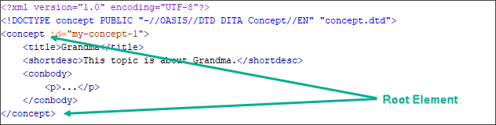
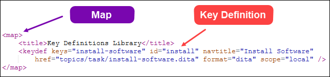

DITA Basics
Common DITA Terms
| Term | Closest IGX Equivalent | Notes |
|---|---|---|
| Topics | Pages | More about topics later. |
| Doctypes/Topic Types | Page Schemas | Examples: Concept, Task, Reference, Generic Topic |
| DITA Maps | Site Tree | More about maps later. |
| Conrefs | Components | Conref short for Content Reference |
| Keys | Variables | More about keys later. |
| DITA-OT | Publishing Engine | DITA-OT short for DITA Open Toolkit |
| Transtypes | [No Equivalent] | Transformation Type: Parameters Defining Output Formats |
| DITAVAL file | [No Equivalent] | User-defined logic for conditional filtering (e.g., audience, platform) |
Darwin Information Typing Architecture (DITA)

Why are our customers using DITA?
- Open Standard
- Separation of source from presentation
- Content reuse = less maintenance
- More reliable content via source validation
- Multi-channel output
What's a Ditamap?

- For writers: An organizational aid
- For publishing: Links to resources related to publishing
- For end users: Ditamaps can be used for navigation like a table of contents (TOC)
What’s a Topic?
- A chunk of information that can stand on its own
- Topics can have either *.xml or *.dita extension
- Three basic topic types in DITA
Concepts
- Contains conceptual or overview information
- Provides background information that users must know before they work with a product or within a process
- Root element of a concept topic is concept

Tasks

- Documents the steps of a particular task or procedure
- Core of task-oriented documentation
- Root element is task
References
- Documents features such as example code or a set of commands
- Tabular information generally belongs in reference topics
- Root element is reference
Remaining Topic Types
- General topic: <topic/>
- Troubleshooting: <troubleshooting/>
- glossentery: <glossentry/>
DITA Maps
Root Element: <map/>
- How writers organize content for delivery.
- DITA maps create sequence and hierarchy among topics.
- When published, maps can be used in ways similar to a TOC or navigation.
Ditamaps are made up mainly of the following element sets:
- Topicref elements provide a link to a specific topic.
- Mapref elements provide a link to another map.
DITA Map Example
<map>
<title>All about Ducks</title>
<topicref href="ducks.dita">
<topicref href="range.dita"/>
<topicref href="size.dita"/>
<topicref href="nests.dita"/>
</topicref>
</map>
The result is a TOC might be structured like this:
- Ducks
- Range
- Size
- Nests
Maps within Maps
-
In addition to topics, you can reference DITA maps inside of DITA maps.
- Subordinate maps (submaps) are usually a collection of related content.
<map>
<title>Water Birds</title>
<topicref href="geese.dita">
<topicref href="swans.dita">
<mapref href="ducks.ditamap" format="ditamap"/>
</map>
Collection Type Attribute
The collection-type attribute of the topicref element defines the relationship between any nested topic references within a ditamap.
- Changing the collection type affects the way automatic links are generated when the ditamap is processed to an output format.
- The collection-type attribute can be set within relationship tables (reltables) as well as ditamaps.
- Example of collection-type syntax:
<topicref href="ducks.dita" collection-type="sequence" />
Three collection-type Attribute Values
- Family: Links generated from parent to children, from children to parent, and from sibling to sibling.
- Sequence: Links generated from parent to children, from children to parent, and from child to previous sibling (if applicable) and next sibling (if applicable).
- Unordered: Links generated from parent to children, and from children to parent.
Family Collection Type
<map>
<title>Page Management in Ingeniux CMS</title>
<topicref href="topics/concept/checking-pages-in-out-1.dita" type="concept" collection-type="family">
<topicref href="topics/task/checking-pages-in-1.dita" type="task"/>
<topicref href="topics/task/checking-pages-out-1.dita" type="task"/>
<topicref href="topics/task/undoing-checked-out-pages-1.dita" type="task"/>
</topicref>
<topicref href="topics/reference/shortcut-keys-1.dita" type="reference"/>
</map>
Sequence Collection Type
<map>
<title>Page Management in Ingeniux CMS</title>
<topicref href="topics/concept/checking-pages-in-out-1.dita" type="concept" collection-type="sequence">
<topicref href="topics/task/checking-pages-in-1.dita" type="task"/>
<topicref href="topics/task/checking-pages-out-1.dita" type="task"/>
<topicref href="topics/task/undoing-checked-out-pages-1.dita" type="task"/>
</topicref>
<topicref href="topics/reference/shortcut-keys-1.dita" type="reference"/>
</map>
Unordered Collection Type
<map>
<title>Page Management in Ingeniux CMS</title>
<topicref href="topics/concept/checking-pages-in-out-1.dita" type="concept" collection-type="unordered">
<topicref href="topics/task/checking-pages-in-1.dita" type="task"/>
<topicref href="topics/task/checking-pages-out-1.dita" type="task"/>
<topicref href="topics/task/undoing-checked-out-pages-1.dita" type="task"/>
</topicref>
<topicref href="topics/reference/shortcut-keys-1.dita" type="reference"/>
</map>
Law & Order

A set of rules governs DITA syntax for topics, maps (and DITAVAL files).
- DTD (Document Type Definition): Used by the DITA-OT exclusively and by most DITA
editors (e.g., Oxygen) by
default.
<?xml version="1.0" encoding="UTF-8"?> <!DOCTYPE concept PUBLIC "-//OASIS//DTD DITA Concept//EN" "concept.dtd"> <concept id="gma-cooking-1"> <title>Grandma's Cooking</title> <conbody/> </concept> - XSD (XML Schema Definition): Used by Fonto to validate DITA source, exclusively.
- Valid vs. well-formed:
- Topics not well-formed are usually missing an angle bracket or the start and end tag names do not match.
- Topics are invalid if DTD rules have been broken (e.g., element or attribute inserted in location within document not allowed by DTD).
Anatomy of a Task
Parts of a Task (1)
Parts of a Task (2)
DITA Task Tags
<?xml version="1.0" encoding="UTF-8"?>
<!DOCTYPE task PUBLIC "-//OASIS//DTD DITA Task//EN" "task.dtd">
<task id="gma-pancake-1">
<title>How to Make Grandma's Pancakes</title>
<shortdesc>How to make Grandma's Pancakes</shortdesc>
<taskbody>
<prereq> Before you begin making Grandma's pancakes, you will need the following
ingredients: <simpletable frame="all" id="simpletable-1">
<sthead>
<stentry>Ingredient</stentry>
<stentry>Number</stentry>
<stentry>Unit</stentry>
<stentry>Required</stentry>
</sthead>
<strow>
<stentry>Flour</stentry>
<stentry>2</stentry>
<stentry>cups</stentry>
<stentry>Yes</stentry>
</strow>
<strow>
<stentry>Milk</stentry>
<stentry>2</stentry>
<stentry>cups</stentry>
<stentry>Yes</stentry>
</strow>
<strow>
<stentry>Eggs</stentry>
<stentry>2</stentry>
<stentry>large</stentry>
<stentry>Yes</stentry>
</strow>
<strow>
<stentry>Salt</stentry>
<stentry>2</stentry>
<stentry>tsp.</stentry>
<stentry>Yes</stentry>
</strow>
<strow>
<stentry>Sugar</stentry>
<stentry>2</stentry>
<stentry>tbsp.</stentry>
<stentry>Yes</stentry>
</strow>
<strow>
<stentry>Rum</stentry>
<stentry>2</stentry>
<stentry>cups</stentry>
<stentry>No</stentry>
</strow>
</simpletable>
</prereq>
<context>
<p>Grandma's pancakes are easy to make. <note type="note">While it seemed like Grandma
used two cups of rum in her pancakes, you can just add less to taste.</note></p>
</context>
<steps>
<stepsection>To make Grandma's pancakes:</stepsection>
<step>
<cmd>In a large bowl, mix ingredients.</cmd>
</step>
<step>
<cmd>Heat a lightly oiled griddle over medium-high heat.</cmd>
</step>
<step>
<cmd>Scoop the batter onto the griddle.</cmd>
</step>
<step>
<cmd>Brown on both sides.</cmd>
</step>
<step>
<cmd>Serve hot.</cmd>
</step>
</steps>
<postreq><note type="warning">Please do not operate heavy equipment after eating Grandma's
pancakes.</note></postreq>
</taskbody>
</task>Required Task Tags
<?xml version="1.0" encoding="UTF-8"?>
<!DOCTYPE task PUBLIC "-//OASIS//DTD DITA Task//EN" "task.dtd">
<task id="req-task-tags">
<title>
</title>
<taskbody>
</taskbody>
</task>What is Normalization?
Normalization is:
- DITA-OT publishing process initiated by a set of publishing parameters defined in the CMSs publishing pipeline.
- An output on its own (DITA-to-DITA), using the "dita" transtype as a parameter.
- And it's also a pre-processing step of the DITA-OT for publishing other outputs such as HTML or PDF.
Here's are some of the things that Normalization does:
- References from one DITA map to another are resolved
- Map-based links, such as those generated by map hierarchy and relationship tables, are added to the topics.
- Link text is resolved.
- Map attributes that cascade are made explicit on child elements.
- Map metadata such as index entries and copyrights are pushed into topics.
- Topic metadata such as navigation titles, link text and short descriptions are pulled from topics into the map.
- XML comments are removed.
Content Reuse

Types of content reuse in DITA:
- Topics and maps
- Fragments (conrefs)
- Variables (keys)
- Conditional filtering
Content References (Conrefs)
- DITA authoring tools streamline the process for inserting conref code, but it's good to know how it works for troubleshooting purposes.
- Every reusable piece of content (and top-level element) requires an
identifier (id).
<concept id="abc123"> <title>Apples</title> <conbody> <p id="def456">Many precautions are taken to ensure the quality and safety of the apples, after the cleaning and packing is complete.</p> <p>During transport, all fruit must be kept below 65 degrees Fahrenheit.</p> </conbody> </concept> - Two parts to a conref:
- Referencing element: Marks where to insert the reused content.
- Referenced element: Contains the content you want to reuse.
Anatomy of a Conref

Conref addressing syntax: topicfilename#topicid/elementid
<p conref="../concepts/apples-1.dita#abc123/ghi789"/>Published DITA with Conrefs

Organizing Shared Fragments
- You can reuse content "in place" or move the content to a "warehouse" location.

Conref addressing syntax:
<p conref="../content-warehouse/warehouse-topic-1.dita#wh-topic-1/xyz123"/>Keep this in mind...
- In the long run, moving your reused content to a "warehouse" is more scalable than the "in place" method.
- Element parity: The target element must be the same element type as the element that contains the conref attribute. Thus, you can only conref a <note> element from another <note> element; you can only conref an <li> element from another <li> element, and so on.
DITA Keys
Use keys to create indirect links (i.e., placeholders) for DITA topics, media resources, and external links.
- DITA maps define keys. All keys use a key name and definition.
- <xref/> elements reference the key name. The system then looks up the definition to retrieve the target.
- Keys reference different resource sets based on scope. DITA maps specify the scope.
- Keys make content reusable. Authors reference keys anywhere in the DITA set.
Direct Links
<xref href="topics/task/install-software.dita" format="dita" scope="local" type="task"/>Indirect Links
<xref keyref=“install-software" format="dita" scope="local" type="task"/>Keydef Maps
Use a submap to contain the key definition library, and reference that submap within your master DITA map.
Key Definition Map Example:
Conditional Filtering
- AKAs: conditional processing, profiling, filtering.
- Allows writers to choose what to show and hide in DITA topics.
- The conditional filtering is resolved during normalization.
- Writers can filter out almost any type of element in DITA topics (and in DITA maps).
- Two parts to conditional filtering:
- Conditional Attributes: Special properties set on elements containing content you want to conditionalize.
- DITAVAL file: Processing file (not published) that tells the publishing engine how to treat elements tagged with conditional attributes.
Conditional Attributes
- Writers mark DITA elements for filtering by adding conditional attributes to elements.
- Conditional attribute values determine if the element should be hidden (filtered out) or shown.
- Four basic conditional attributes:
- audience: Content is intended for a specific group of readers (e.g., experience level, security clearance, etc.).
- platform: Content is specific to a particular hardware or software platform.
- product: Content is specific to a particular product.
- otherprops: For conditions specific to your organization. (It's available for customization.)
- Important: All DITA writers in your organization must agree on the purpose of each attribute and the values to use with them.
Example:
<p platform="android">Visit Google Play for more information.</p>
<p platform="iphone">Visit the App Store for more information.</p>
DITAVAL File
- Contains the logic behind your conditional attribute filtering.
- Uses .ditaval extension (e.g., apples-1.ditaval)
- XML file.
- Used by the publishing engine (DITA Open Toolkit).
- DITAVAL file is never published.
- Usually created and maintained by information architect.
- Included in DITA maps with the <ditavalref> element.
<map> <title>Apples and Oranges</title> <ditavalref href="resources/ditaval/apples-1.ditaval" processing-role="resource-only"/> <topicref href="topics/concepts/apples-1.dita"/> <topicref href="topics/tasks/oranges-1.dita"/> </map>
Anatomy of a DITAVAL File
- <val>: Root element
- <prop>: Where conditions are defined.
- @att: The condition attribute name applied to the element in your document.
- @val: The condition attribute (
@att) value as defined in the element. - @action: Choose to include or exclude the specified attribute
(
@att) from the output.
<?xml version="1.0" encoding="UTF-8"?>
<val>
<prop att="audience" val="user" action="exclude"/>
</val>
Remaining @action values:
- flag: Includes and flags the content on output (if the content has not been excluded).
- passthrough: Preserves attribute value as part of the output for further processing by a runtime engine.
See http://docs.oasis-open.org/dita/dita/v1.3/errata02/os/complete/part3-all-inclusive/langRef/ditaval/ditaval-val.html for more examples.
Keep this in mind...
- Case matters with conditional filtering attribute values. Choose one form of capitalization and stick with it.
- Spaces in attribute values:
- OK - audience="server-admin cms-admin"
- Wrong - audience="server admin cms admin"